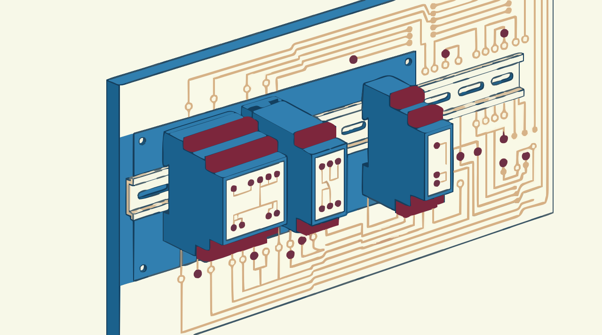

La sala de turbinas · Sesión 10
Inteligencia de Negocios · Dudbil Olvasada Pabón Riaño · UNAB
Consultando la API de la TRM...
Pesos por dólar. Superintendencia Financiera, datos.gov.co.
Resultado de aprendizaje 2.3
Conectas Power BI a una API, de forma que se pueda actualizar.
Programas o planeas la actualización, y sabes qué limita cada licencia.
Diagnosticas por qué falló, y detectas cuando falla sin avisar.
Microsoft Learn, DirectQuery in Power BI: “Visuals don't reflect source changes until you refresh”.
Microsoft Learn: Data refresh in Power BI.
El servicio necesita saber a qué fuente se conecta antes de ejecutar la consulta. Si no puede, es un origen dinámico, que en la mayoría de los casos no se actualiza allí.
Se revisa en Power Query: Configuración de origen de datos. Allí aparece la advertencia.
Microsoft Learn: Data refresh in Power BI, “Refresh and dynamic data sources”; Web.Contents.
Microsoft Learn: Data refresh in Power BI. Hasta 8 franjas diarias en capacidad compartida (Pro); hasta 48 en Premium. Revise la licencia y la versión vigente.
Microsoft Learn: Data refresh in Power BI; What is an on-premises data gateway?
Tablero de fallas · Haz clic en una lámpara

English immersion · 10 minutes
“Power BI sends refresh failure notifications to the semantic model owner through email, so that they can act in a timely manner.”
Microsoft Learn, Data refresh in Power BI (slightly shortened)
refresh · schedule · gateway · credentials · to fail · owner · stale data · on-premises
Regleta de bornes
Documentación de la planta
Microsoft Learn. Data refresh in Power BI. learn.microsoft.com
Microsoft Learn. DirectQuery in Power BI. learn.microsoft.com
Microsoft Learn. Web.Contents. learn.microsoft.com
Microsoft Learn. What is an on-premises data gateway? learn.microsoft.com
Superintendencia Financiera de Colombia. Tasa de Cambio Representativa del Mercado (TRM) [API]. Datos Abiertos Colombia. CC BY-SA 4.0. datos.gov.co
Chen, D. (2015). Online Retail [conjunto de datos]. UCI. CC BY 4.0. doi:10.24432/C5BW33
Iconos: Lucide, licencia ISC. Dirección de arte e ilustraciones: generadas con Gemini, vectorizadas y adaptadas; las ilustraciones no contienen datos. Gráficas hechas con los datos reales.